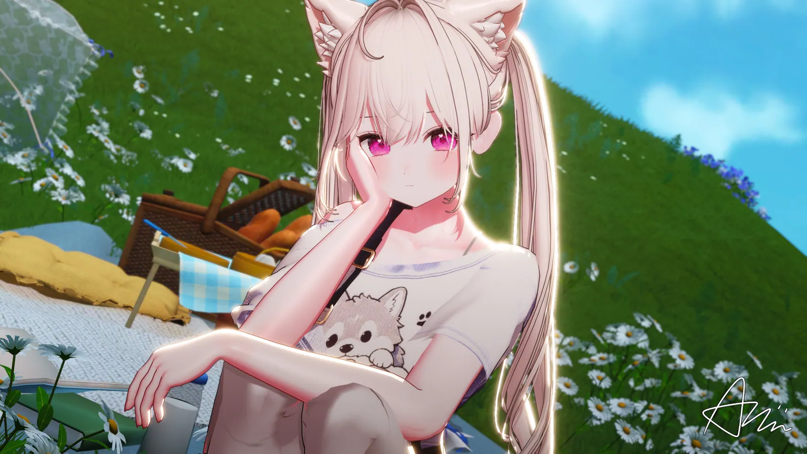
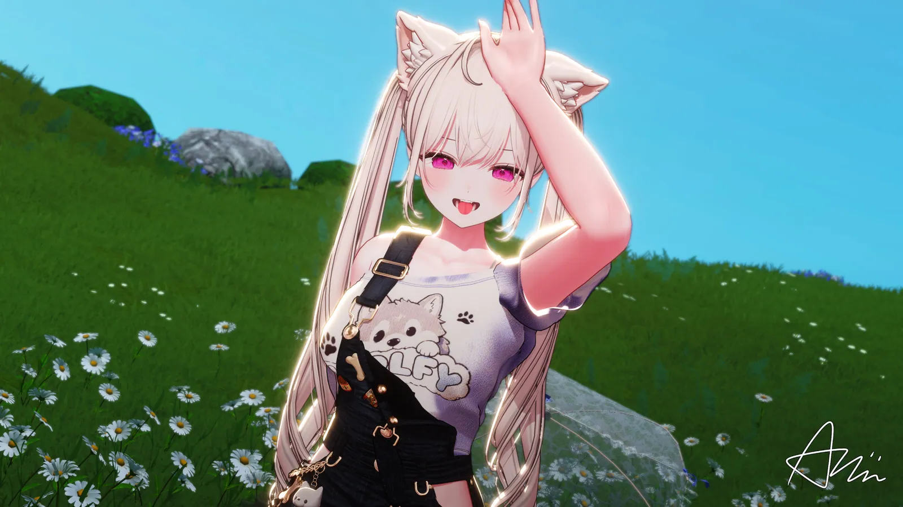

♡ 나만의 최애곡
마음에 드는 노래를 즐겨찾기에 모아보세요. 이 브라우저에 저장돼요.
좋아하는 노래를 찾아 듣고, 나만의 플리를 만들고,
오늘은 랜덤으로 아쿠의 목소리를 만나봐.
노래를 검색하고 ♡ 즐겨찾거나 + 플리에 담아보세요.

마음에 드는 노래를 즐겨찾기에 모아보세요. 이 브라우저에 저장돼요.

뭘 들을지 고민될 땐 랜덤으로. 등록된 노래에서 골라드려요.
노래를 편집하고 GitHub에 저장을 누르면 모든 방문자의 공식 노래책에 반영돼요. 토큰은 브라우저 메모리에서만 사용하며 저장하지 않습니다.